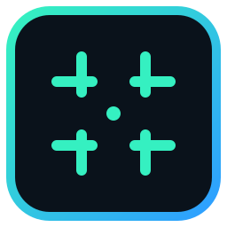
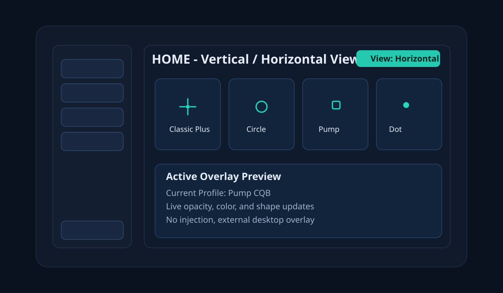
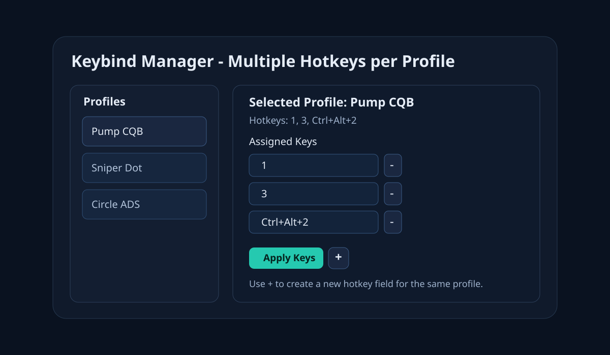
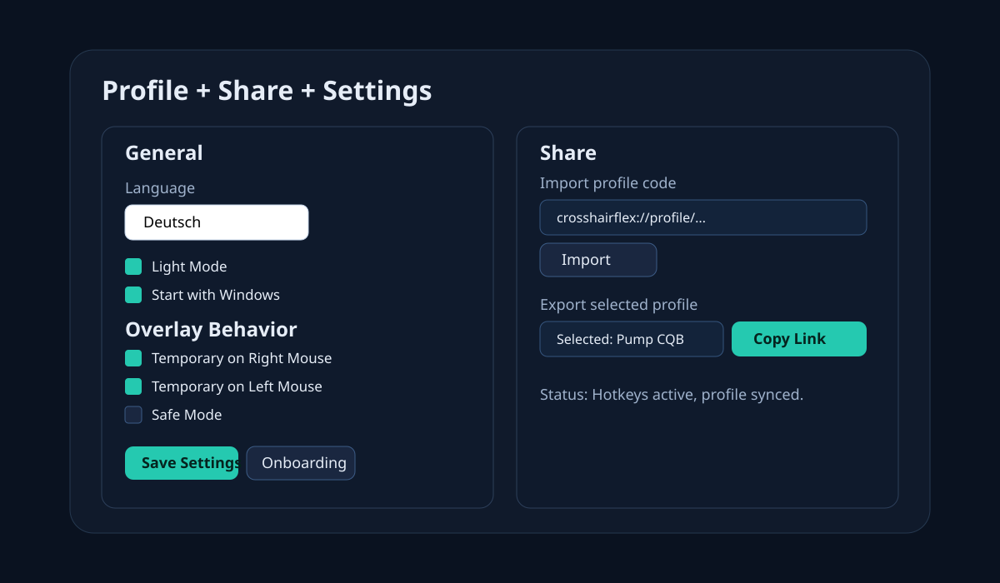

Crosshair Profiles
Create profiles in Add/Edit and save only when ready. Delete with confirmation and keep full control.

Lightweight crosshair overlay for Windows with profile sharing, keybind switching, vertical/horizontal home views, and passive input handling.
Download for WindowsCreate profiles in Add/Edit and save only when ready. Delete with confirmation and keep full control.
Switch profiles instantly while keeping passive input handling for gameplay.
Copy share links and import shared profile codes directly in the Share section.
Toggle between vertical and horizontal home profile views with one click.
Create a profile in Add/Edit and save only when your setup is ready.
Switch Home between vertical and horizontal profile views anytime.
Assign one or multiple hotkeys per profile and apply them instantly.
Use Share import/export and configure overlay behavior, theme, language, and startup.



Typical idle load is around 0.1% to 0.5% on modern systems. Short spikes can happen when changing profiles.
Usually around 40 to 90 MB while running in the background with one active profile.
Normally near 0% to 1%, because the overlay draws only simple UI elements.
In most cases FPS impact is hard to notice. Disable unused overlays to keep system overhead minimal.
No. CrosshairFlex is designed as an external overlay and does not inject into game processes.
Yes. Use the Share page to copy profile links and import shared profile codes.
Yes. The Home page supports vertical and horizontal profile layouts with a quick toggle.
Yes. On first app launch the onboarding opens automatically once. You can reopen it later from Settings.
Yes, in some games this can potentially be bannable depending on anti-cheat rules. Use at your own risk.
Use it only where overlays are allowed, avoid ranked/competitive modes if rules are unclear, keep CrosshairFlex updated, and close other non-essential overlay tools. No external overlay can guarantee zero anti-cheat risk.